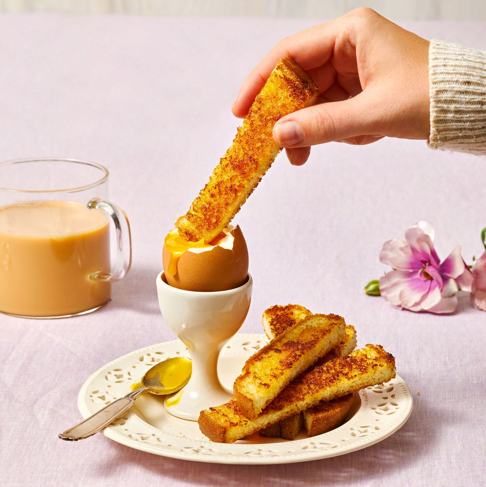

Soft Boiled Eggs with Deviled Soldiers

Description
Ingredients
- 4 large eggs
- 1/4 c. mayonnaise
- 1/2 tsp. hot Hungarian paprika
- 4 slices white bread (each 1/2 inch thick)
Steps
- Bring medium saucepan of water to a boil. Using large slotted spoon, gently lower eggs into boiling water. Simmer 6 minutes. Using same spoon, transfer to egg cups or bowl.
- In small bowl, stir together mayonnaise and paprika. Spread 1/2 tablespoon onto each side of each bread slice.
- Heat large skillet on medium-high. In 2 batches, cook bread until golden brown, 11/2 to 2 minutes per side. Cut toast into 1/2-inch-wide strips.
- Using knife or egg topper, slice 1/2 in. off top of each egg. Serve in egg cups with toast soldiers.
Go Back